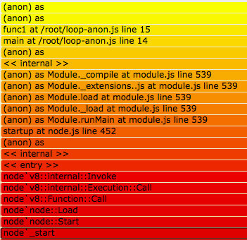
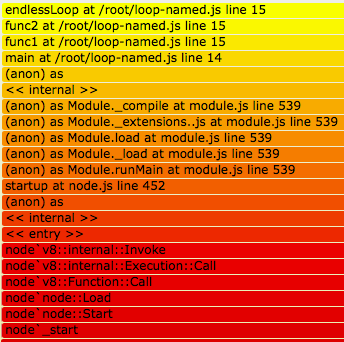
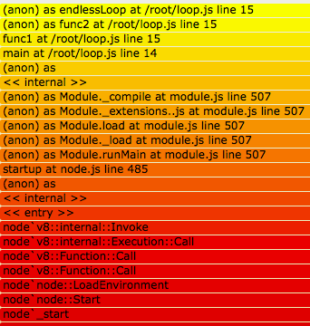

For the sake of your future self who's debugging the code you're writing today, and for all those who depend upon any code you publish to NPM... name your functions. Please.
Unfortunately, the benefits of naming your functions are not immediately apparent; and worse yet, the language itself encourages this namelessness with features such as arrow functions. I'm as guilty as the next person, having a substantial amount of code on GitHub and NPM with nameless functions, wanting for identity. It's a lesson that, like so many others in this field, I had to learn the hard way: by having to troubleshoot my awful code in a failing production setting.
Before I get into why you should be naming each and every function, lets look at some examples of what a nameless (aka anonymous) function looks like in some typical Javascript code:
request('http://my-service.com/', (err, res, body) => {
// if I only had a name...
})
server.on('ready', function () {
// a function has no name
})
Corny references to The Wizard of Oz and Game of Thrones aside, the above examples should look pretty familiar. I've done it. Chances are you've done it. It's concise, sleek, and all well and good until one wants to know what's going on with a certain process in production that's not acting like any of the others. The alternative isn't so bad. Consider this:
server.on('ready', function onReady () {
// They call me, onReady
})
It's a little more wordy, but worth it's increased line length in gold. Lets take a look at why.
stacktraces
Lets execute this code:
produceError(function (str) {
throw new Error(str)
})
function produceError (cb) {
cb('boom');
}
Upon executing this, we'll get a stacktrace because of the thrown error. The stacktrace will look like this:
Error: boom
at /some/dir/anon_cb.js:2:9
at produceError (/some/dir/anon_cb.js:7:3)
at Object.<anonymous> (/some/dir/anon_cb.js:1:63)
at Module._compile (module.js:556:32)
at Object.Module._extensions..js (module.js:565:10)
at Module.load (module.js:473:32)
at tryModuleLoad (module.js:432:12)
at Function.Module._load (module.js:424:3)
at Module.runMain (module.js:590:10)
at run (bootstrap_node.js:394:7)
Lets focus on these two lines:
at /some/dir/anon_cb.js:2:9
at produceError (/some/dir/anon_cb.js:7:3)
Notice how we have a function name plus line number for produceError, but only a line number for the first line (which is the last call in the call stack)? This is because we supplied an anonymous callback function to produceError. If we change our code slightly, the stacktrace will change as well. Lets's change it to be:
produceError(function after (str) {
throw new Error(str)
})
function produceError (cb) {
cb('boom');
}
The two lines in question change to:
at after (/some/dir/anon_cb.js:2:9)
at produceError (/some/dir/anon_cb.js:7:3)
Just like that, we have some additional context in our stacktrace! You might be thinking, is it really a big deal? Even without the function name, we have a line number. That may be true for small modules in a vacuum; however, while troubleshooting, any context you can give yourself (or others) could be beneficial. If you're working on small modules that may become parts of larger applications, naming your functions in ways that provide meaning and context may just save your users some precious time.
What about arrow functions? They're stranger yet. Lets change our code to this (keeping the produceError function the same as above):
produceError((str) => {
throw new Error(str)
})
The two lines of the stcktrace we're narrowed in on become:
at produceError (/some/dir/arrow_cb.js:2:9)
at produceError (/some/dir/arrow_cb.js:7:3)
This is possibly worse than no context... it's sort of misleading. Horrible.
inferred names
The experienced Javascripter may be waving their hands right about now, yelling "what about inferred names"? Fair enough, lets talk about those. Here's some example code that will lead to an inferred function name:
const after = function (str) {
throw new Error(str)
}
produceError(after)
Here, we technically have an anonymous function assigned to a variable called after, and we use that as our callback. V8 is smart enough to give us a stack trace that looks like this:
at after (/some/dir/inferred_arrow_cb.js:2:9)
at produceError (/some/dir/inferred_arrow_cb.js:9:3)
Here, for the purposes of this output, the inferred name is being treated as the actual name. We'll see some examples later where it's clear that there is a distinction between the two, but for now it's the same for all intents and purposes. Of course, one limitation of this approach, is you have to define the callback prior to using it. You cannot declare the callback in-line as you call the produceError function. You also cannot take advantage of hoisting, a feature some may consider vile, but I'll go into depth on how to use to your advantage in a subsequent article.
For now, lets table this and come back to it. It's worth noting, that if you used an arrow function in the above example, the stacktrace would still look identical.
flamegraphs
Another extremely useful tool we have for peering into production processes, is dtrace. I'm using this tool on the SmartOS platform. It exists on other platforms (as do other tools that offer some of it's capabilities, but I will not cover those here). I'm not a dtrace ninja (though I strive to be), but one thing I've used it for extensively, is creating flamegraphs of my running node processes, to get a very clear picture of where my processes are spending their time.
To demonstrate how function names impact our flamegraphs, lets consider a new piece of code, in which I'm constructing a callstack so that our flamegraphs have some substance to them. These are very simple graphs; production graphs in real applications will have a lot more going on. Here's our starting code:
new Error().stack
function main () { func1() }
function func1 () {
;(function () {
;(function () {
for (;;) {}
})()
})()
}
main()
I know. This code is ugly. The endless loop is there so we have time to get a good sample from dtrace, and we're doing two auto-executing anonymous functions so we can show the impact of... anonymous functions. I run this little gem of a program like so:
node loop-anon.js &
Which spits our a PID that I use in this next set of commands to produce some stacks:
~ $ dtrace -n 'profile-97/pid == $PID && arg1/{ @[jstack(150, 8000)] = count(); } tick-60s { exit(0); }' > anon.out
~ $ c++filt < anon.out > anon-demangled.out
Finally, lets convert this into a flamegraph we can look at. The first time, you'll need to install the awesome stackvis tool:
~ $ npm i -g stackvis
~ $ stackvis dtrace flamegraph-svg < anon-demangled.out > anon-stacks.svg
Which gives us this graph:

And there we have it; two anonymous functions at the top of our flame - absolutely useless. We can see our main and func1 functions... because they're named functions. So let's tweak our program slightly and see if the flame graph improves:
new Error().stack
function main () { func1() }
function func1 () {
;(function func2 () {
;(function endlessLoop () {
for (;;) {}
})()
})()
}
main()
And here's the resulting flamegraph (using a set of commands to generate it identical to the commands above, only the PID changes):

Isn't that nice? The top of our flame now has names. This information could potentially guide us to a bug that only showed up in production, or a performance regression, or any number of things. The time savings could be very substantial. Even the chance of such a thing should warrant whatever inconvenience you may think naming your functions imposes on you. These days I cringe when someone argues for semi-colons, something that really is stylistic in nature, and then omits function names, which will actually affect production observability. Don't be that.
For completeness here, lets look at a flamegraph for code that uses inferred function names. Here's the code:
new Error().stack
const func2 = function () {
endlessLoop()
}
const endlessLoop = function () {
for (;;) {}
}
function main () { func1() }
function func1 () {
func2()
}
main()
And here's the resulting flamegraph:

You can see the distinction between the actual function name and it's inferred name now. Notice the (anon) as endlessLoop; this is telling you it's an anonymous function who's inferred name is endlessLoop. Not quite as neat and tidy as the named functions below in the graph, but it gets the job done. Of course it comes with the same limitations discussed above.
mdb
Lastly, I'd like to touch on mdb. This is another tool I've used (on SmartOS) to troubleshoot, observe, and perform postmortem debugging. I'm not going to go into how to use mdb here (here's a great article on the topic), but I want to show the output of mdb for functions with varying levels of identities. Following is some example output of ::jsstack -vn0:
An anonymous function:
js: <anonymous> (as <anon>)
file: /some/dir/anon-loop.js
posn: line 18
A named function:
js: func2
file: /some/dir/anon-loop.js
posn: line 16
this: b43772d3 (<unknown>)
For functions with inferred names, the (as <anon>), in the first example, would be replaced with the inferred function name, so for example:
js: <anonymous> (as EventEmitter.emit)
summary
When I was getting started in Javascript, I saw it mentioned here and there that you "should name your functions". There was never any explanation as to why, other than "it will help you when debugging". Great, but how? Hopefully this article gives you a head start in understanding the how and why.
These days, I'm very careful about the modules from NPM that I depend on in my code, and one of the biggest factors is - if this module breaks, is it written in a way that will help me understand how it broke? Commit to making your code debuggable and observable. There's obviously more to these things than just naming your functions, but it's a great start, so go forth and bring names to the nameless ones!